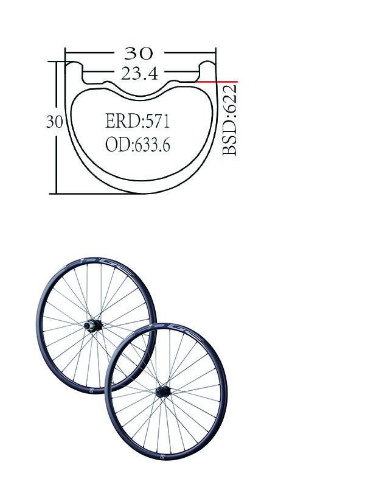

GRV 30

Specifications
| Rim Size |
W:30mm; H:30mm |
| Model |
GRV 30 |
| Rim Type |
Carbon Clincher |
| E.R.D |
571.0 |
| Spoke |
24/24 |
| Shape |
Round D.B |
| Material |
Stainless |
| Nipple Material & Gauge |
Alloy 14G |
| Lacing |
Cross |
| Hub |
EDGE 395JM |
| Bearings |
2/4 sealed bearing |
| Freehub Type |
Shimano/ Sram 11s |
| Freehub Switchable |
Yes |
| Freehub Material |
Alloy |
| Axle Width (O.L.D) |
F: 100mm/ R: 142mm |
| Axle Material |
Alloy |
| Skewer Type |
12/12mm thru axle |
| Weight (w/o skewer) |
1523.8g +/- 30g |
| |
| |
| |
GRV 30 AL

Specifications
| Rim Size |
W:30mm; H:23mm |
| Model |
GRV 30 AL |
| Rim Type |
Alloy Clincher |
| E.R.D |
594.3 |
| Spoke |
24/24 |
| Shape |
Round D.B |
| Material |
Stainless |
| Nipple Material & Gauge |
Alloy 14G |
| Lacing |
Cross |
| Hub |
EDGE 395JM |
| Bearings |
2/4 sealed bearing |
| Freehub Type |
Shimano/Sram 11s |
| Freehub Switchable |
Yes |
| Freehub Material |
Alloy |
| Axle Width (O.L.D) |
F: 100mm/ R: 142mm |
| Axle Material |
Alloy |
| Skewer Type |
12/12mm thru axle |
| Weight (w/o skewer) |
1603.8g +/- 30g |